A first-principles walkthrough of "GaussianGPT: Towards Autoregressive 3D Gaussian Scene Generation" (arXiv:2603.26661, TU Munich). No prior 3D knowledge assumed.
The paper's claim in one sentence: you can generate entire 3D indoor scenes the same way ChatGPT generates text, one token at a time, if you first invent a way to turn a 3D scene into a sequence of tokens. This document explains every step of that "if": what the scene is made of, how it gets compressed, what vector quantization means, how a 3D grid becomes a 1D sequence, and how the transformer reads it.
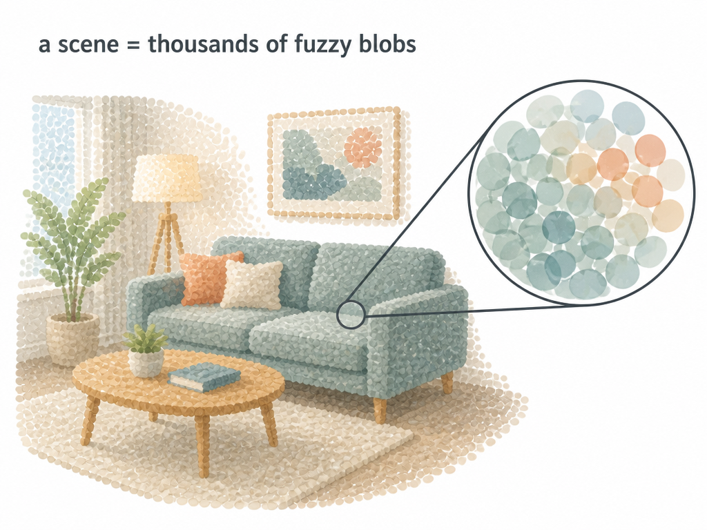
Forget triangles and meshes. In 3D Gaussian Splatting (3DGS), a scene is just a huge cloud of small, fuzzy, semi-transparent colored blobs floating in space. Each blob is called a Gaussian primitive. Stack enough of them (hundreds of thousands for a room) and from any camera angle they blend into a photorealistic image. Think of it as pointillism in 3D: no single blob looks like anything, but together they form a sofa.
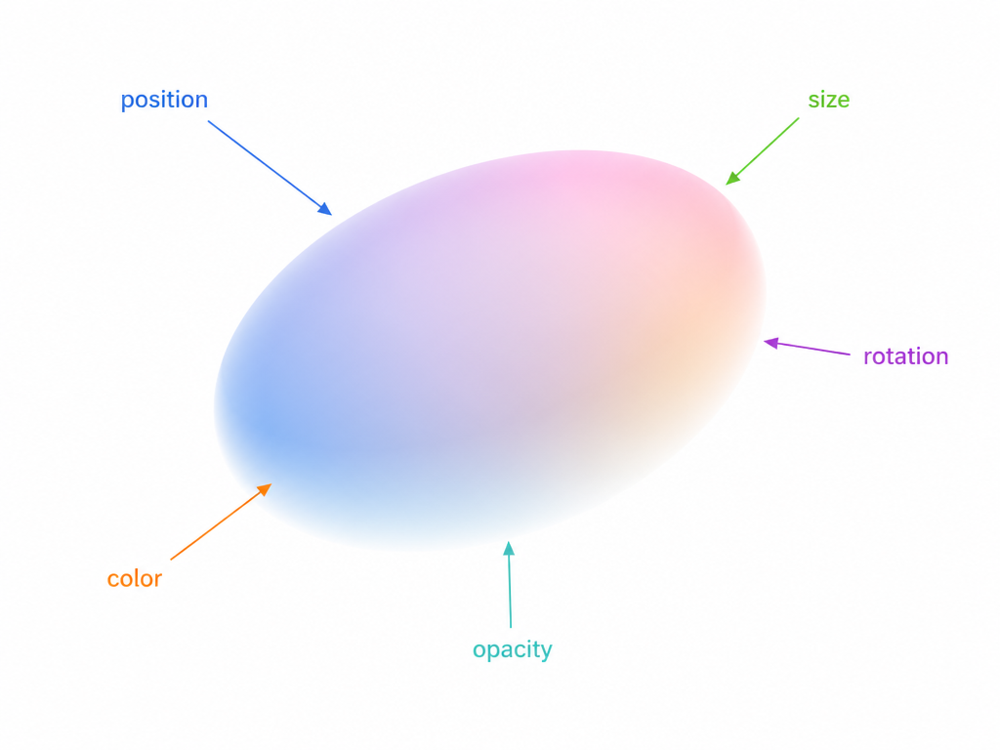
Each blob is described by a handful of numbers:
So a scene is literally a long list of (position, size, rotation, color, opacity) records. Rendering means splatting each blob onto the screen and blending them front to back. This is fast enough to run in real time, which is why 3DGS took over the field.
A Generative Pre-trained Transformer (GPT) does exactly one thing: given a sequence of discrete tokens, predict the next token. That works beautifully for text because text already is a sequence of discrete symbols with a natural left-to-right order.
A Gaussian scene violates both requirements at once:
The whole paper is a recipe for fixing these two problems. Fixing problem 1 is called quantization (Parts 3 to 5). Fixing problem 2 is called serialization (Part 6). Once both are fixed, a stock GPT does the rest.
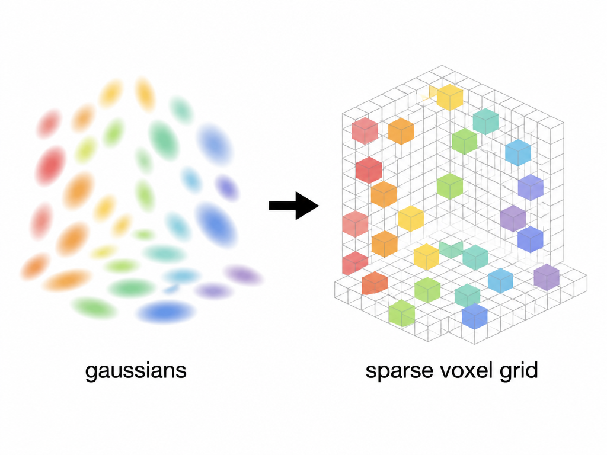
First, structure. Lay a regular 3D grid of small cells over the scene, each cell 2.5 cm wide. A 3D cell is called a voxel (volume pixel). Every Gaussian gets assigned to the voxel that contains its center. Two details make this lossless enough:
Crucially, the grid is sparse: a room is mostly air, so most voxels are empty and simply do not exist in memory. Only occupied voxels are stored. Each occupied voxel then gets a feature vector: small learned encoder heads take each attribute (size, rotation, color, opacity, offset), embed them, and concatenate the results into one vector per voxel. The scene is now a sparse 3D grid of feature vectors instead of a soup.
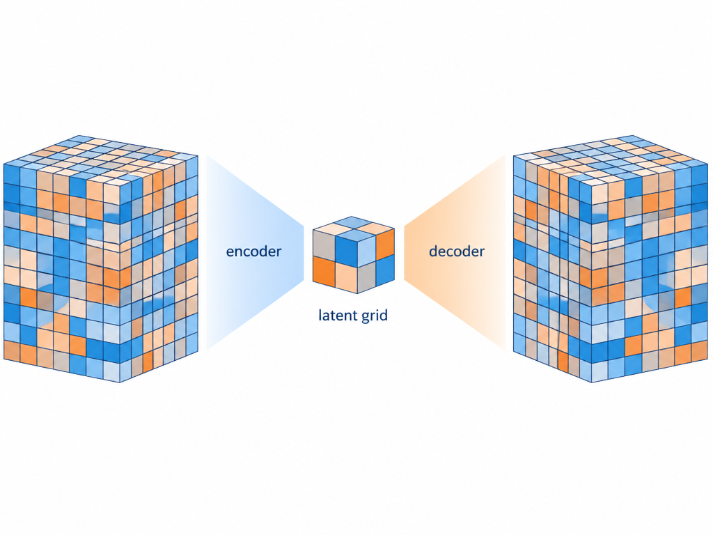
The grid from Part 3 is still enormous. A GPT with a bounded context window cannot afford one token per 2.5 cm voxel. So the paper compresses the grid with an autoencoder, the standard hourglass trick:
"Sparse" matters again: the convolutions only touch occupied cells, so empty air costs nothing. "Convolutional" matters too: convolutions treat every location identically, so a chair looks the same to the network wherever it stands. That translation equivariance is exactly the right prior for scenes.
The autoencoder is trained by re-rendering: reconstruct the Gaussians, splat them into images from sampled camera poses, and compare against ground-truth images with a color loss and a perceptual loss. An occupancy loss teaches the decoder which voxels should exist at all, and a codebook entropy term (next part) keeps quantization healthy.
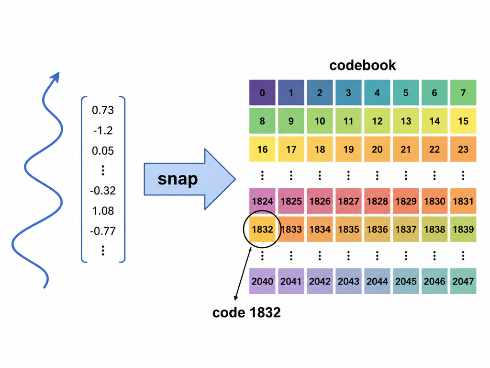
After the encoder, each latent cell holds a continuous vector. Still not tokens. Vector Quantization (VQ) is the classic fix: maintain a codebook, a fixed palette of, say, 4,096 reference vectors, and replace each continuous vector with the index of its nearest codebook entry. The vector "snaps" to the closest palette color. Now every latent cell is described by a single integer, and integers from a finite vocabulary are exactly what a GPT eats. This is the same trick image models like VQGAN use to turn pictures into token grids.
Classic VQ has a known disease: codebook collapse. The nearest-neighbor lookup is not differentiable, gradients reach the codebook only through tricks, and in practice the model ends up using a tiny fraction of its palette while the rest of the entries go stale.
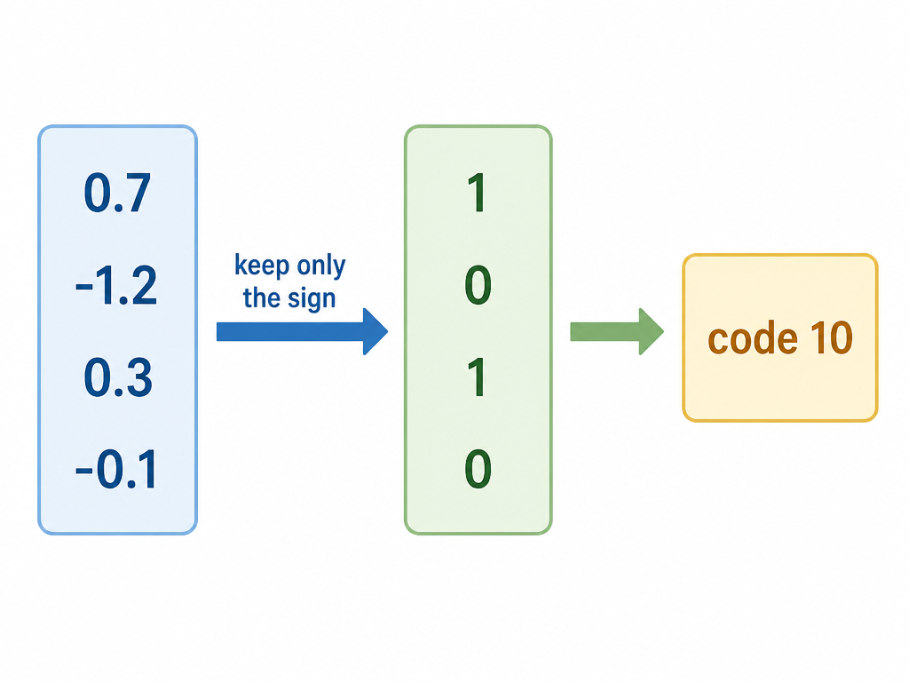
The paper uses Lookup-Free Quantization (LFQ) instead, and it is delightfully simple. Drop the learned codebook entirely. Make the encoder output a short vector, then quantize each dimension to a single bit by its sign: positive becomes 1, negative becomes 0. A 12-dimensional output gives a 12-bit string, and that bit string is the token index. The codebook of 4,096 entries is just the set of all 12-bit numbers; nothing is looked up and nothing can go stale. An entropy loss during training pushes the encoder to actually spread its outputs across many different bit patterns, so the whole vocabulary gets used.
Where we stand. A continuous scene has become a sparse, coarse 3D grid where every occupied cell carries one integer from a fixed vocabulary. Problem 1 from Part 2 is solved.
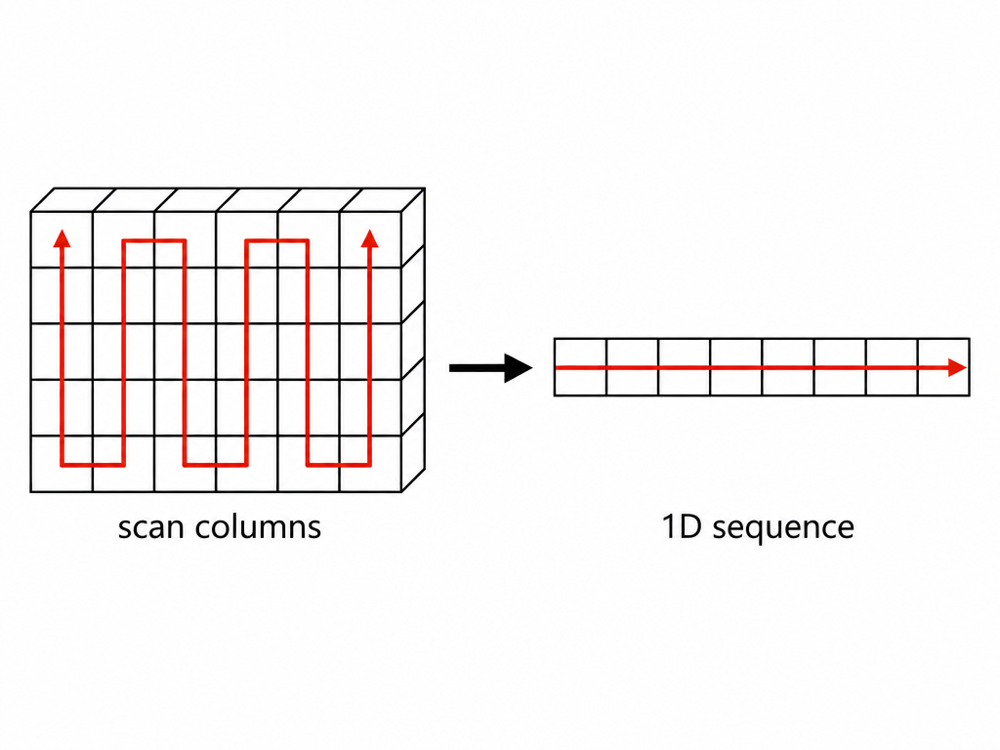
Problem 2 remains: a transformer needs a 1D sequence, and we have a 3D grid. Serialization is choosing a visiting order for the occupied cells. GaussianGPT uses the most boring order imaginable, plain xyz traversal: at each floor position, walk the full vertical column from bottom to top, then step to the next floor position, like reading a page column by column. Fancy alternatives exist (Hilbert curves, Z-order curves) that keep spatial neighbors closer together in the sequence, and the paper tests them. The boring order wins. Part 7 explains why it can afford to.
Scenes grow cubically with size, so the model never sees a whole scene at once. It works on fixed-size chunks (a few meters across), and each voxel's position index is counted relative to its chunk, not in world coordinates. That keeps the vocabulary small and lets the same model generalize across positions and scenes.
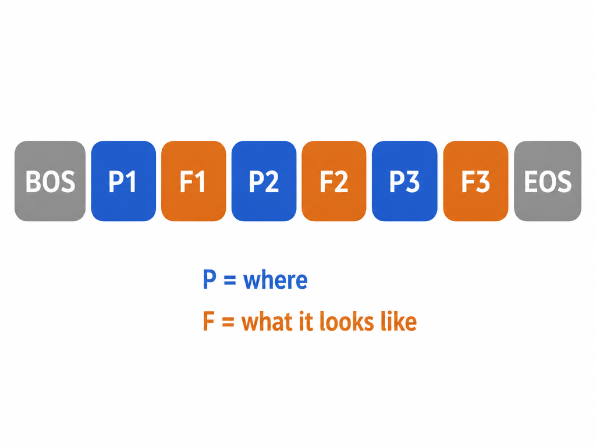
Now, what exactly is a token? Each occupied cell contributes two tokens, interleaved:
P: which cell index (within the chunk) is occupied nextF: the LFQ code of that cell, i.e. what the contents look likeSo the sequence reads BOS, P1, F1, P2, F2, ..., EOS, where begin-of-sequence (BOS) and end-of-sequence (EOS) are ordinary boundary markers. Empty cells cost nothing; they are simply skipped, and the gaps between consecutive position indices encode the emptiness for free.
The two token types get separate vocabularies and separate output heads. At even steps the model predicts from the position vocabulary only, at odd steps from the feature vocabulary only, with invalid entries masked out. This decoupling stops geometry and appearance from competing over the same indices, and it lets chunk size and codebook size be chosen independently.
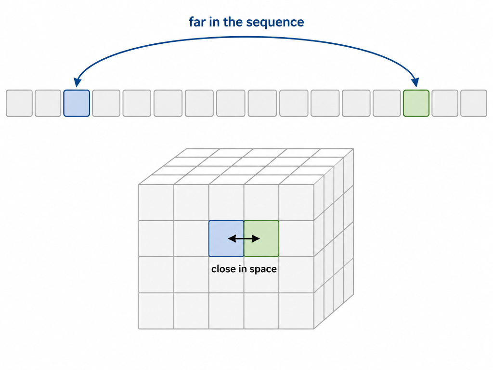
Here is the flaw the serialization introduced. Two voxels can be direct neighbors in space yet end up hundreds of tokens apart in the sequence (adjacent columns, same height). A standard transformer only knows sequence positions, so it would have to learn that token 7 and token 312 are actually touching. That is a terrible use of model capacity.
Rotary Positional Embedding (RoPE) is the standard way modern language models encode position: each token's query and key vectors get rotated by an angle proportional to the token's position, which makes attention scores depend on the relative distance between tokens. GaussianGPT keeps the mechanism but swaps the input: instead of rotating by sequence index, it rotates by the voxel's actual (x, y, z) coordinates. Attention then measures spatial offsets directly. Two spatially adjacent voxels attend to each other as neighbors no matter how far apart the serialization put them.
One more nicety: each cell's P token and F token share the same coordinates, so a fourth rotary dimension encodes token type, letting the model tell "where" tokens from "what" tokens inside the same unified attention.
This is also why the boring xyz ordering beats Hilbert curves in the ablation (Table 2 of the paper). The space-filling curves exist to smuggle spatial locality into the 1D order, but 3D RoPE already delivers locality directly inside attention. With locality handled, the serialization only needs to be predictable, and a rigid column scan is easier to predict than a recursive fractal path.
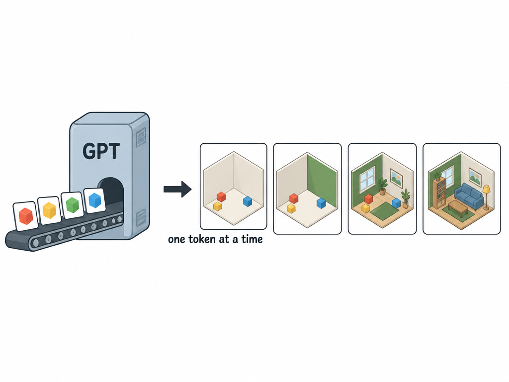
The transformer itself is deliberately unexciting: a decoder-only GPT-2 style model (built on the nanochat codebase) with query-key normalization and the Muon optimizer, trained with plain teacher-forced cross-entropy: predict token i given tokens 1 through i−1. That ordinariness is the point. All the 3D-specific intelligence lives in the representation, so a battle-tested language-model recipe transfers unchanged.
Generation at inference time:
BOS.EOS, then hand all (position, code) pairs to the frozen decoder from Part 4, which turns them back into actual Gaussians you can render.Because each position token names a concrete cell, the sampler can mask cells that are already filled or would violate the scan order. Illegal scenes are unsampleable by construction, something diffusion models cannot promise.
And now the features fall out for free, all from the same trained model with no extra machinery:
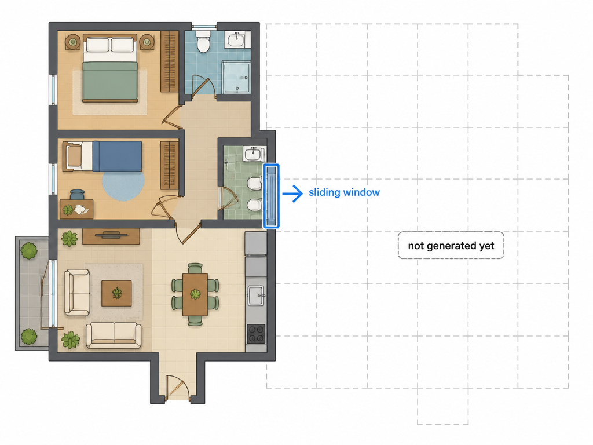
On unconditional chair generation (the PhotoShape benchmark), GaussianGPT beats the diffusion baselines DiffRF and L3DG on image-quality metrics by a wide margin and covers the shape distribution better, while staying competitive on geometric fidelity (Table 1 of the paper). Qualitatively its samples avoid the stray floating blobs that diffusion outputs tend to leave, likely because the model makes an explicit yes/no occupancy decision per cell instead of denoising everything everywhere.
On full scenes there is no established benchmark, so the evidence is qualitative: coherent furnished rooms, diverse completions from the same prefix, and the large outpainted apartments above. A ScanNet++ appendix shows real-world scans work too, though autoencoder fidelity becomes the bottleneck there.
| Language modeling | GaussianGPT |
|---|---|
| character/byte | one Gaussian blob |
| tokenizer | voxelize → sparse 3D CNN encoder → LFQ |
| vocabulary | position indices + 4,096 LFQ codes |
| token | interleaved pair: where (P), what (F) |
| detokenizer | sparse 3D CNN decoder → Gaussians → splatting |
| reading order | column-wise xyz scan over chunks |
| positional encoding | RoPE over real (x, y, z) + token type |
| prompting | partial scene as prefix |
| long-context generation | sliding-window outpainting |
The one-line takeaway: quantize, serialize, then trust the transformer. Everything 3D-specific is squeezed into the tokenizer and the positional encoding; the generative model itself is a language model that happens to speak "room".